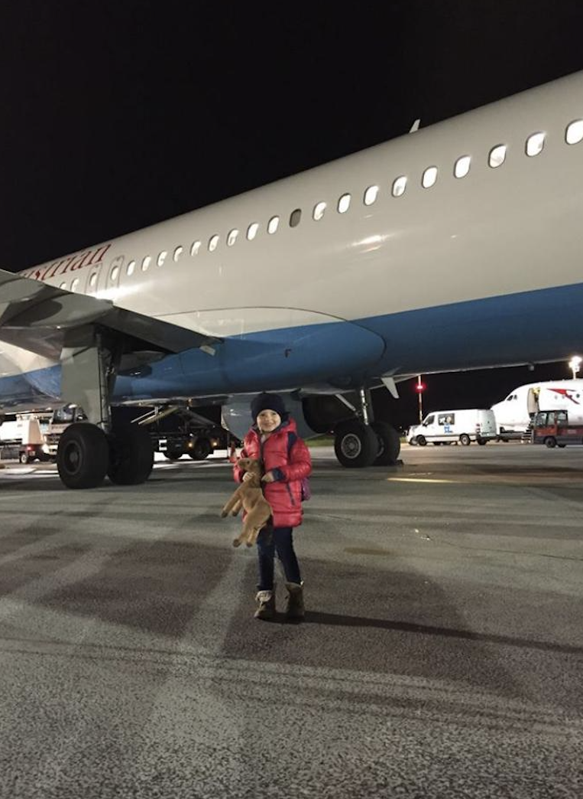
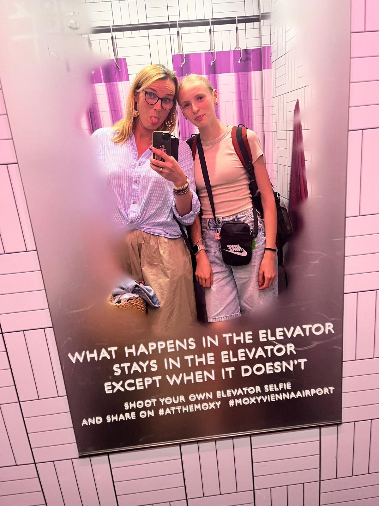
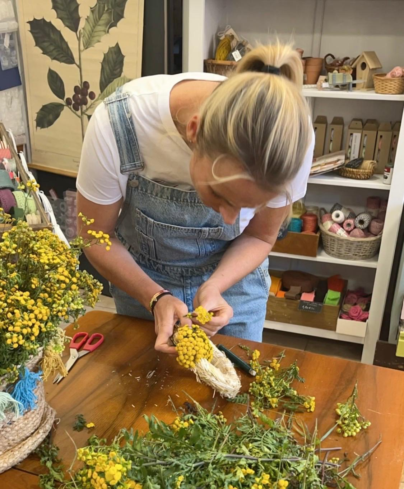

Nemčinu neučím.
Nemčinou žijem.
Nemčina nie je len o gramatike a slovíčkach. Je o ľuďoch, rozhovoroch a príležitostiach. Už viac ako 25 rokov je súčasťou môjho života. A rada vám ukážem, ako sa v nej môžete cítiť doma aj vy.

Katarína Pischel
Vaša lektorka a sprievodkyňa nemčinou
Nemčina pre dospelých
Rozprávajte, skúšajte a zbavte sa strachu z chýb v bezpečnom prostredí.
Nemčina pre deti a tínedžerov
Menej strachu a bifľovania, viac prirodzeného rozprávania a záujmu.
Nemčina pre firmy
Profesionálna obchodná komunikácia, tlmočenie a podpora pre váš biznis.
Nemčina pre dospelých
Rozprávajte. Skúšajte. Robte chyby.
Možno nemčinu ovládate, ale keď máte niečo povedať, zrazu neviete nájsť tie správne slová. Alebo sa ju ešte len začínate učiť a neviete, kde začať.
Na mojich hodinách dostanete priestor predovšetkým vy. Budete hovoriť, skúšať, pýtať sa a pokojne aj robiť chyby. Ja vás budem počúvať, usmerňovať, opravovať a povzbudzovať.
A chyby? Tie predsa robíme všetci. Aj ja. Nemčinou žijem už viac ako 25 rokov a stále sa učím niečo nové. A keď niečo neviem? Jednoducho sa opýtam. Veď práve v tom je čaro učenia.
Každá hodina je prispôsobená vám. Vašej úrovni, tempu aj tomu, čo potrebujete. Či už je to nemčina do práce, na cestovanie, na život v Nemecku alebo jednoducho radosť z toho, že sa konečne dokážete porozprávať.
Poďme sa rozprávať. Red mit!
Odbúranie strachu
Získajte istotu v ústnom prejave bez stresu z hodnotenia.
Reálne situácie
Témy z bežného života, pracovného prostredia a pobytu v zahraničí.
Flexibilné tempo
Výučba presne podľa vašich časových možností a osobných cieľov.
Praktické frázy
Učte sa to, čo naozaj využijete v praxi a pri rozhovoroch.
Prirodzené učenie
Metódy overené pri vlastnej dcére – bez zbytočného bifľovania.
Úspechy v praxi
Skúsenosti s prípravou žiakov na úspešné jazykové olympiády.
Témy pre mladých
Zohľadnenie záujmov detí a tínedžerov pre maximálnu motiváciu.
Zlepšenie v škole
Cielená pomoc so školským učivom aj rozvoj pokročilej konverzácie.
Nemčina pre deti a tínedžerov
Menej strachu, viac rozprávania!
Svoju dcéru som učila nemčinu odmalička. A práve pri nej som videla, ako prirodzene dokážu deti prijímať nový jazyk, zapamätať si celé frázy a začať ich používať bez toho, aby premýšľali nad každým gramatickým pravidlom.
Túto skúsenosť dnes využívam aj pri individuálnych hodinách s deťmi a tínedžermi. Viem, že nie každé dieťa nadchnú gramatické tabuľky a nekonečné cvičenia. A ani nemusia. Na mojich hodinách sa predovšetkým rozprávame.
Vychádzame z tém, ktoré sú deťom blízke. Učíme sa praktické frázy, vytvárame vlastné vety a skúšame ich používať v rozhovoroch. Gramatiku nevynechávame – vysvetľujem ju jednoducho, postupne a na príkladoch, ktorým deti rozumejú. A potom ju hneď používame v praxi.
Deti si často zapamätajú oveľa viac, než si myslíme. Stačí im dať priestor, správne ich motivovať a nebáť sa nechať ich hovoriť. Každé dieťa má svoje tempo a to rešpektujem – či už potrebuje pomoc so školským učivom, chce sa zlepšiť v nemčine alebo získať odvahu rozprávať.
„Mám veľkú radosť, keď vidím, ako sa moji žiaci postupne osmeľujú a začínajú rozprávať. Jednu z mojich žiačok, ktorá sa počas našich hodín krásne rozrozprávala, dokonca jej učiteľka navrhla na olympiádu v nemeckom jazyku. Pre mňa je to dôkaz, že keď dieťa získa istotu a chuť komunikovať, dokáže sa posunúť oveľa ďalej.“
Nemčina nemusí byť len predmet v škole. Môže sa stať jazykom, ktorý bude dieťa rado používať. Poďme sa rozprávať. Red mit!Nemčina pre firmy
Spoľahlivá komunikácia s nemecky hovoriacimi obchodnými partnermi bez nedorozumení a jazykových bariér. Zastúpim vašu firmu na profesionálnej úrovni.
Obchodná komunikácia
Profesionálne vystupovanie a kultivovaný obchodný prejav prispôsobený nemeckej firemnej etikete.
Preklady dokumentov
Presné preklady zmlúv, cenových ponúk, prezentácií, objednávok a obchodnej korešpondencie.
Tlmočenie rokovaní
Konzekutívne tlmočenie na osobných aj online rokovaniach s dôrazom na kontext a detaily.
Sprevádzanie
Osobná jazyková a organizačná podpora pri návšteve zahraničných partnerov či veľtrhov.
Telefonická podpora
Vybavovanie operatívnych telefonátov, dopytov a e-mailov v mene vašej spoločnosti.
Externá asistencia
Flexibilná dlhodobá spolupráca bez nutnosti prijímať interného zamestnanca.
Individuálna firemná výučba nemčiny
Cielené jazykové vzdelávanie pre majiteľov firiem, manažérov a kľúčových zamestnancov.
Vyberte si svoju cestu k nemčine
Začnite bezplatnou lekciou, učte sa vlastným tempom alebo sa rovno pustite do rozhovoru so mnou.
Workbooky a digitálne produkty
Ukážkový pracovný zošit – ako vnímam nemčinu ja, a ďalšie praktické materiály.
Ukážkový pracovný zošit
Základy nemčiny bez stresu
Základy nemčiny bez stresu
Viete, ako sa po nemecky opýtať „Ako sa máte?“ Ale viete aj to, ako by vám odpovedal Nemec v bežnom rozhovore?
Vyskúšajte si môj bezplatný ukážkový workbook. Spoznáte užitočné frázy, prirodzené reakcie a jednoduché konverzačné cvičenia, ktoré vám pomôžu začať hovoriť s väčšou istotou.
Úroveň: A1–A2
Formát: PDF na stiahnutie
REDMIT Edícia
Základy nemčiny bez stresu
PDF pracovný zošit A1–A2
Kompletný sprievodca pre začiatočníkov. Jasne vysvetlená gramatika a kľúč správnych riešení.
REDMIT Edícia
Tréning aktívnej slovnej zásoby
Interaktívne jazykové cvičenia
Cvičebnica plná dopĺňačiek, prekladových viet a praktických úloh na upevnenie pádov.
REDMIT Edícia
Nemčina v reálnych situáciách
Tematické lekcie a modelové situácie
Hotové dialógy, vzorové e-maily a slovník fráz pre prácu, telefonáty a úrady.
Nemčinu neučím. Nemčinou žijem.
Ahoj, som Katarína!
Nemčina je súčasťou môjho života už viac ako 25 rokov. V Nemecku som vyštudovala vysokú školu, spoznala množstvo zaujímavých ľudí a postupne sa tento jazyk stal prirodzenou súčasťou môjho života.
Vtedy som ešte netušila, akú veľkú úlohu v ňom raz zohrá. A už vôbec nie, že mi prinesie nielen množstvo príležitostí a priateľstiev, ale napokon aj rodinu.
Jeden malý experiment, ktorý zmenil veľa
Keď sa mi narodila dcéra, rozhodla som sa, že sa s ňou budem rozprávať po nemecky. Žili sme na Slovensku, ale chcela som, aby nemčinu vnímala prirodzene, ako súčasť nášho každodenného života.
Priznávam, nie vždy to bolo jednoduché. Ľudia sa na mňa občas pozerali zvláštne a niekedy bolo naozaj náročné zostať dôsledná. Ale nevzdala som sa.
A potom prišiel moment, na ktorý nikdy nezabudnem.
Dcéra bola ešte maličká. Pri prebaľovaní som jej povedala:
„Leg dich hin.“ – Ľahni si.
A ona si ľahla.
V tej chvíli som pochopila, že mi naozaj rozumie. Bol to neuveriteľný pocit. Pokračovali sme ďalej. Dcéra mi síce odpovedala po slovensky, ale ja som s ňou naďalej komunikovala po nemecky. Postupne sa z nemčiny stal náš malý tajný jazyk.
A potom život napísal vlastný scenár
Verím, že život je plný náhod. A niektoré sú také neuveriteľné, že by pokojne mohli byť námetom na film.
Svojho manžela som stretla úplnou náhodou v našom meste. Bol na Slovensku prvýkrát, len približne dvanásť hodín. Oslovil ma po anglicky. Ja som mu odpovedala po nemecky. A odvtedy sme spolu.
Práve preto dnes žijem medzi Slovenskom a Nemeckom. Nemčina je súčasťou môjho každodenného života – doma, s rodinou, priateľmi aj v úplne obyčajných situáciách.
A moja dcéra? Hoci môjmu manželovi od začiatku rozumela, dlho mu nechcela odpovedať po nemecky. Trvalo približne rok, kým sa osmelila a začala rozprávať. Dnes hovorí po nemecky úplne prirodzene, bez cudzieho prízvuku. A nemčina je dodnes tak trochu naším spoločným tajným jazykom.
Práve pri nej som pochopila, že rozumieť ešte neznamená mať odvahu hovoriť. Všetko má svoj čas.
Dva domovy. Jeden spoločný jazyk.
Cestovanie sa stalo prirodzenou súčasťou nášho života. Dcéra pozná letiská a lietadlá odmalička. Spoločne sme absolvovali množstvo ciest, presunov, čakania na letiskách aj dobrodružstiev.
A nemčina nás sprevádzala na každom kroku. Dnes sú pre nás Slovensko a Nemecko dva svety, medzi ktorými sa prirodzene pohybujeme. A jazyk je to, čo ich spája.

Na cestách odmalička

O niekoľko rokov neskôr

Medzi dvoma domovmi
Dvadsať rokov podnikania. A nová kapitola.
Po štúdiu v Nemecku som sa vrátila na Slovensko s ružovými okuliarmi. Realita však bola trochu iná, než som si predstavovala, a tak som začala hľadať nové možnosti.
Veľkou inšpiráciou mi bol jeden kreatívny obchod v Nemecku, ktorý som počas štúdia pravidelne navštevovala. Najmä vo chvíľach, keď mi bolo smutno za domovom a za rodičmi. Vždy som si tam našla niečo, z čoho som mohla vytvoriť niečo pekné. A hneď bol svet o čosi veselší.
Po návrate na Slovensko som si uvedomila, že podobný koncept u nás chýba. Objavila sa príležitosť, nápad dostal konkrétnu podobu a spoločne sme sa pustili do podnikania. Z niečoho, čo mi kedysi pomáhalo zahnať smútok za domovom, sa stal podnikateľský príbeh, ktorý trval dvadsať rokov.


Boli to roky plné kreativity, obchodu, práce s ľuďmi, ale aj rozhodnutí, zodpovednosti a neustáleho hľadania riešení.
Situácia na trhu a podmienky podnikania na Slovensku sa však postupne zmenili natoľko, že pokračovanie v pôvodnej podobe už pre mňa nebolo dlhodobo udržateľné.
A tak som sa rozhodla firmu po dvadsiatich rokoch uzavrieť.
Nebolo to jednoduché rozhodnutie. Ale verím, že vedieť niečo ukončiť v správnom čase je rovnako dôležité ako mať odvahu začať.
Prečo vznikol REDMIT?
Po ukončení podnikania som premýšľala, čomu sa chcem venovať ďalej. A odpoveď som mala vlastne celý čas pred sebou. Nemčina. Jazyk, ktorý ma sprevádza väčšinu dospelého života, priniesol mi množstvo príležitostí, priateľstiev a napokon aj rodinu.
Už nejaký čas som pomáhala s nemčinou deťom, tínedžerom aj dospelým. A zistila som, akú radosť mi robí sledovať, ako postupne získavajú istotu a začínajú rozprávať.
Nie som klasická učiteľka nemčiny. A chyby? Tie robím aj ja. Stále sa učím nové veci a keď niečo neviem, jednoducho si to overím. Veď človek sa učí celý život. Na mojich hodinách preto nejde o dokonalosť. Gramatika má svoje miesto, ale jazyk je predovšetkým o komunikácii.
A tak vznikol REDMIT – slovná hračka z nemeckého „Rede mit mir“, teda „Rozprávaj sa so mnou“.
Čo si prinášam do novej kapitoly?
Viac ako 25 rokov života s nemčinou, vysokoškolské štúdium v Nemecku, dvadsať rokov podnikania, obchodné skúsenosti a množstvo situácií, ktoré ma nenaučila žiadna učebnica.
A tiež presvedčenie, že na učenie sa niečoho nového nikdy nie je neskoro. Pred dvadsiatimi rokmi som sa rozhodla podeliť o svoju radosť z tvorenia. Dnes sa chcem podeliť o svoju radosť z nemčiny.
Možno som uzavrela jednu veľkú kapitolu. Ale nemčina je príbeh, ktorý pokračuje. A rada vás doň pozvem.
Poďme sa rozprávať. Red mit!
Napíšte mi správuKontaktujte ma
Máte otázku k individuálnym hodinám, detským lekciám, firemnej spolupráci alebo workbookom? Napíšte mi.
Priamy kontakt
Katarína Pischel • REDMIT